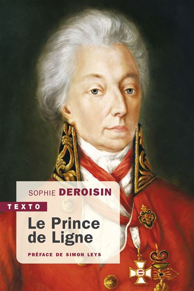
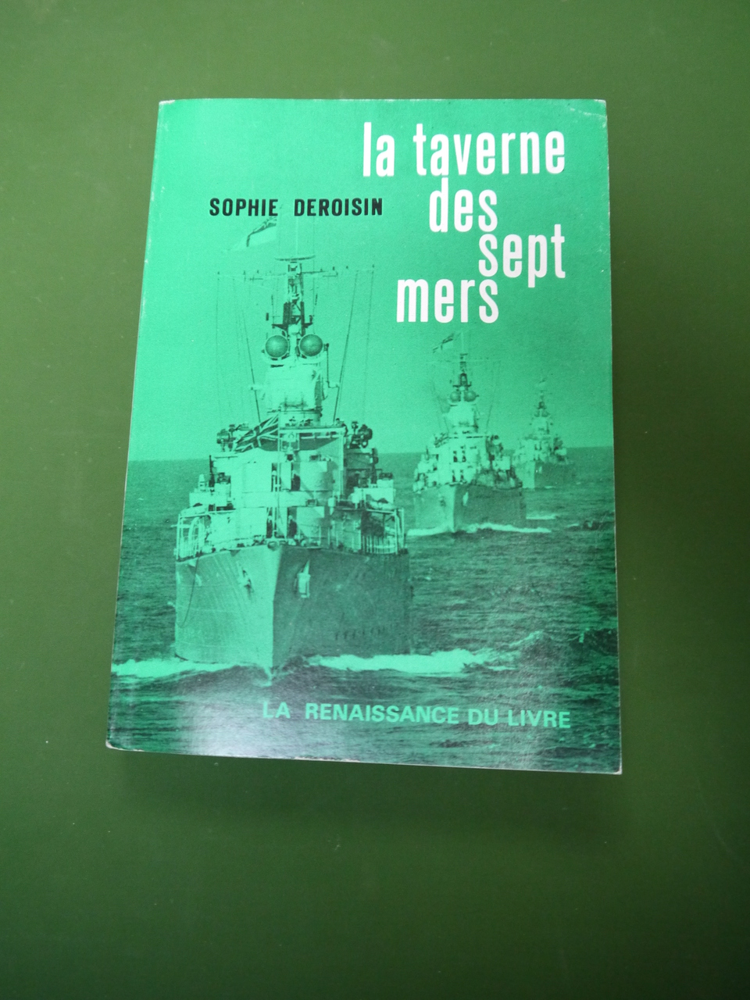
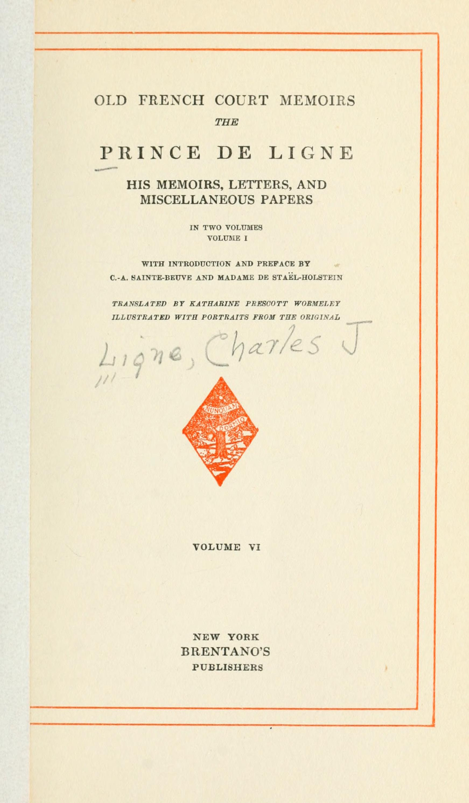
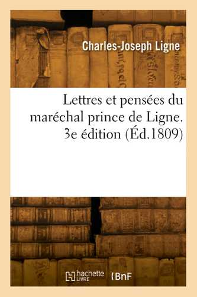
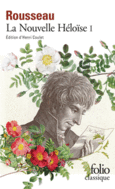
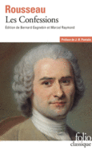
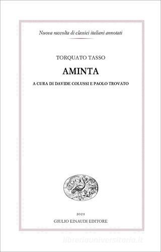

55:33 · 10 OPERE
Charles-Joseph de Ligne. Un ritratto del Settecento.
Il filo del discorso
Charles-Joseph de Ligne diventa, in questa conversazione, la porta di ingresso a un Settecento fatto di viaggi, conversazioni e incontri fra uomini di lettere e sovrani. Dr Divago presenta il principe come un soldato e uno scrittore capace di conservare leggerezza, curiosità e indipendenza. Il ritratto nasce dalle sue memorie e lettere, dalla biografia di Sophie Deroisin con prefazione di Simon Leys e dalla scelta di scritti curata da Madame de Staël. I trentaquattro volumi ricordati nel video appartengono ai Mélanges militari, letterari e sentimentali: non sono trentaquattro volumi di sola autobiografia. Il centro narrativo è l’incontro con Rousseau. De Ligne entra nel piccolo alloggio di un autore celebre e ne descrive gesti, diffidenze, lavoro musicale e passione botanica. Ne emerge una tensione fra rango sociale e prestigio dell’ingegno: il principe dichiara di sentirsi intimidito dal filosofo, mentre Rousseau teme lo sguardo di chi appartiene al mondo aristocratico. Le pagine sulla Nouvelle Héloïse e sulle Confessions aprono poi il problema della memoria: chi racconta una vita seleziona episodi e attribuisce intenzioni. La scheda conserva queste scene come la testimonianza di de Ligne, senza assumere come diagnosi o come verità definitiva i suoi giudizi su Rousseau. Voltaire e Federico II ampliano il quadro della conversazione europea. L’aneddoto sui gondolieri che cantano Tasso permette anche di osservare come una memoria cambi fra selezioni e traduzioni: la versione inglese richiamata nel video nomina Aminta, mentre quella francese consultata reca la Gerusalemme. La discrepanza resta dichiarata. L’incontro fra persone lontane per provenienza o posizione viene contrapposto, nel discorso del relatore, a una società contemporanea che egli giudica dominata dalla mediocrità, dall’interesse e dalla paura del pensiero indipendente. Da qui nascono le digressioni più polemiche: Carlyle e l’economia, la guerra civile statunitense, Darwin e la selezione, il rapporto fra filosofia e violenza politica. Sono interpretazioni di Dr Divago, da distinguere dai riscontri storici. La polemica razzista di Carlyle contro l’emancipazione e la centralità della schiavitù nelle dichiarazioni secessioniste impediscono di ridurre questi temi a un semplice contrasto fra aristocrazia e industria. Anche il sottotitolo dell’Origine delle specie non è, da solo, la prova di un programma di guerra fra gruppi umani. Il richiamo all’intervista di Pasolini con Enzo Biagi introduce invece il problema di chi può parlare liberamente in televisione e di quanto un mezzo condizioni ciò che si dice. La conclusione torna al carattere del principe e alla parola nobiltà, usata dal relatore soprattutto in senso morale: capacità di riconoscere il valore altrui, generosità e rifiuto della meschinità. Viaggi, lettere e amicizie costruiscono l’immagine di una vita più ampia dei propri vantaggi. È una proposta etica e letteraria, non la dimostrazione che l’intero ordine aristocratico fosse privo di violenza o di disuguaglianze. La stessa prefazione di Leys aiuta a mantenere questa distanza, segnalando ciò che il ritratto affettuoso di Deroisin può lasciare in ombra. Le ipotesi sui rapporti con Caterina II, sulla corona polacca e sulle motivazioni private di altri scrittori restano tali, senza diventare fatti accertati.
I libri nel discorso

Le Prince de Ligne
Copertina: Prima edizione La Renaissance du Livre, 1965; riedizione ARLLFB / Le Cri, 2006, 224 pagine, prefazione di Simon Leys, ISBN 2871064121. Copertina della successiva edizione Tallandier, Texto, 9 marzo 2023, 224 pagine, ISBN 9791021057357.
Copertina della riedizione Tallandier 2023, con prefazione di Simon Leys: non la edizione originale del 1965 e non una specifica copia mostrata nel video.
Biografia di Sophie Deroisin, con prefazione di Simon Leys, esplicitamente nominata.
Passaggio 5:32 ↗ · Fonti e libro ↗
La Taverne des sept mers. Carnets de guerre. Capetown 1941–1943. Alger 1944
Fotografia Belgicana della copertina La Renaissance du Livre 1976: Fotografia della copertina dell’esemplare La Renaissance du Livre, Bruxelles, 1976, nel catalogo Belgicana. È la stessa opera dei carnets di guerra, distinta da Le Prince de Ligne. L’edizione 1976 è verificata bibliograficamente, non certificata nel video. Nessun ISBN certo reperito; nessuna ipotetica edizione 1951 aggiunta.
Fotografia della copertina dell’esemplare La Renaissance du Livre, Bruxelles, 1976, nel catalogo Belgicana. È la stessa opera dei carnets di guerra, distinta da Le Prince de Ligne. L’edizione 1976 è verificata bibliograficamente, non certificata nel video. Nessun ISBN certo reperito; nessuna ipotetica edizione 1951 aggiunta.
Nel segmento 49,374,18–380,32 s, il nome dell’autrice della biografia del principe è riconoscibile, pur deformato dall’ASR. I segmenti 50–52,380,32–402,16 s, passano espressamente a un’altra sua opera: dopo aver ricordato la vita in Sudafrica durante la guerra, il relatore ne rende il titolo in italiano come La Taverna dei Sette Mari. L’esatto titolo francese e l’autrice sono riscontrati su copertina e cataloghi primari; non si tratta di una nuova edizione della biografia.
Passaggio 6:27 ↗ · Fonti e libro ↗
The Prince de Ligne: His Memoirs, Letters, and Miscellaneous Papers
Identificazione probabile
Frontespizio del volume I della raccolta inglese in due volumi, non copertina esterna: Frontespizio reale del VOLUME I dell’antologia inglese in due volumi, tradotta da Katharine Prescott Wormeley, con introduzione C.-A.Sainte-Beuve e prefazione Madame de Staël-Holstein; New York, Brentano’s. In basso VOLUME VI è il numero nella serie Old French Court Memoirs, non il numero del tomo dell’antologia. Il frontespizio non reca un anno;1899 è la data del catalogo della digitalizzazione e del copyright sul verso nell’OCR, non un anno visibile su questa immagine. Record IA terminante 02 etichettato erroneamentevolume 2. Esemplare University of California Libraries; nessuna edizione specifica certificata nel video.
Frontespizio reale del VOLUME I dell’antologia inglese in due volumi, tradotta da Katharine Prescott Wormeley, con introduzione C.-A.Sainte-Beuve e prefazione Madame de Staël-Holstein; New York, Brentano’s. In basso VOLUME VI è il numero nella serie Old French Court Memoirs, non il numero del tomo dell’antologia. Il frontespizio non reca un anno;1899 è la data del catalogo della digitalizzazione e del copyright sul verso nell’OCR, non un anno visibile su questa immagine. Record IA terminante 02 etichettato erroneamentevolume 2. Esemplare University of California Libraries; nessuna edizione specifica certificata nel video.
Segmenti 53–55,402,16–434,66 s: il relatore distingue i 34 volumi francesi da edizioni ridotte delle memorie. La lingua inglese, il titolo completo, la traduttrice e l’anno 1899 non sono pronunciati in questo passaggio. L’attribuzione alla selezione Wormeley è probabile per la collazione dei brani letti: inizio autobiografico sull’anno precedente al 1740, p. 51; visita a Rousseau e stanza dei topi/santuario della virtù, p. 136; gondolieri e Aminta, p. 154. Le memorie e questi brani costituiscono l’oggetto centrale del video, mentre la biografia di Deroisin è richiamo introduttivo distinto.
Passaggio 6:42 ↗ · Fonti e libro ↗Le prince de Ligne (I–II)
Identificazione probabile
Frontespizio della raccolta inglese contenente la traduzione del saggio, pp. 1–33: Frontespizio del volume I di The Prince de Ligne: His Memoirs, Letters, and Miscellaneous Papers, traduzione Katharine Prescott Wormeley, Brentano’s, New York, raccolta 1899 (anno da copyright/catalogo, non stampato sul frontespizio). Contiene la traduzione del saggio di Sainte-Beuve come Introduction, pp. 1–33: provenienza Causeries du Lundi, giugno 1853, dichiarata nella nota a p. 1; passo sull’homme aimable alle pp. 10–12. È il frontespizio della raccolta contenente, non copertina autonoma del saggio francese 1853 o del tomo Garnier 1854.
Frontespizio del volume I di The Prince de Ligne: His Memoirs, Letters, and Miscellaneous Papers, traduzione Katharine Prescott Wormeley, Brentano’s, New York, raccolta 1899 (anno da copyright/catalogo, non stampato sul frontespizio). Contiene la traduzione del saggio di Sainte-Beuve come Introduction, pp. 1–33: provenienza Causeries du Lundi, giugno 1853, dichiarata nella nota a p. 1; passo sull’homme aimable alle pp. 10–12. È il frontespizio della raccolta contenente, non copertina autonoma del saggio francese 1853 o del tomo Garnier 1854. In basso VOLUME VI indica la serie Old French Court Memoirs; VOLUME I indica il tomo dell’antologia. Il record IA terminante 02 è etichettato erroneamente volume 2. Nessuna edizione posseduta o letta nel video è certificata.
Cues 60–61, 474.80–496.50 s: l’ASR rende il nome come Saint Beav e associa l’homme aimable a un celebrato saggio sul principe. Titolo, data, tomo e traduzione non pronunciati. Cues 62–63, 496.50–535.12 s, introducono invece una diversa raccolta recente di scritti politici in francese.
Passaggio 7:54 ↗ · Fonti e libro ↗
Lettres et pensées du maréchal prince de Ligne
Copertina del facsimile Hachette Bn F 2023 · terza edizione 1809: Selezione originaria del 1809. Immagine editoriale del facsimile Hachette Livre / Bn F, 9 maggio 2023, 370 pagine, ISBN 9782329919669, della terza edizione del 1809. Il testo digitalizzato consultato per il confronto è invece della quarta edizione 1809, Paschoud, 336 pagine.
Copertina editoriale autentica del facsimile moderno, non legatura del 1809. La terza edizione riprodotta non coincide con la quarta edizione del testo di confronto; non viene identificata con certezza la edizione del filmato.
Madame de Staël, la scelta di lettere e pensieri del 1809 e la prefazione poi letta nel finale.
Passaggio 9:09 ↗ · Fonti e libro ↗
Simposio
Copertina: Adelphi · Piccola Biblioteca 81 · 1979
Copertina autentica dell’edizione di riferimento, controllata visivamente. Non identifica l’esemplare letto o citato nel video.
Alcibiade e il Simposio sono richiamati nel confronto sul rapporto con il filosofo.
Passaggio 18:50 ↗ · Fonti e libro ↗
Julie, ou La Nouvelle Héloïse
Copertina del volume I · Folio classique, 1993: Romanzo pubblicato nel 1761. Copertina del solo volume I della edizione Gallimard, Folio classique 2419, a cura di Henri Coulet, 25 marzo 1993, 560 pagine, ISBN 9782070385669. Il volume II appartiene separatamente al numero 2420.
Immagine del solo volume I, con titolo, autore e cura di Henri Coulet leggibili. Non viene presentata come copertina di una edizione integrale in un unico volume né della prima edizione del 1761.
Titolo La Nouvelle Héloïse nella rievocazione della conversazione con Rousseau.
Passaggio 28:30 ↗ · Fonti e libro ↗
Les Confessions
Copertina: Opera autobiografica pubblicata postuma in due parti nel 1782 e nel 1789. Copertina della edizione Gallimard, Folio classique 2776, a cura di Bernard Gagnebin e Marcel Raymond, 26 marzo 2009, 864 pagine, ISBN 9782070399697.
Immagine autentica dell’opera, controllata visivamente; l’edizione di riferimento non è attribuita al filmato.
Le Confessions di Rousseau sono nominate a proposito dei ricordi contestati da de Ligne.
Passaggio 30:51 ↗ · Fonti e libro ↗
Aminta
Copertina: Favola pastorale rappresentata nel 1573. Copertina della edizione Einaudi, 9 febbraio 2021, testo critico di Paolo Trovato, introduzione e commento di Davide Colussi, LXIII, 304 pagine, ISBN 9788806246853. Non la edizione del ricordo settecentesco né una copia identificata nel video.
Immagine autentica dell’opera, controllata visivamente; l’edizione di riferimento non è attribuita al filmato.
Aminta di Tasso e il ricordo dei gondolieri; titolo attestato anche nella traduzione inglese di Wormeley, distinto dalla versione francese.
Passaggio 34:44 ↗ · Fonti e libro ↗
L’origine delle specie
Copertina: Bollati Boringhieri · I grandi pensatori
Titolo e sottotitolo della opera di Darwin richiamati nella digressione sulle razze.
Passaggio 38:53 ↗ · Fonti e libro ↗Minutaggi ricavati da testi automatici, da riascoltare. Le identificazioni probabili sono segnalate accanto ai libri.